与代数相关的概念非常简单：我们用字母代替未知项（未知数）或需要改变的项（变量）。
对，这就是代数。我们已经和它打了很长时间的交道，小学生都知道：
我心里想着一个数，它乘以两倍得10。
这个数是几？
无论在哪个国家，这个题目都可以作为一堂数学课的开始。在解题时，不管你用什么方法，都要先设一个未知数，即一个抽象的概念。代数的运算规则就是正常的算法规则。通过代数，我们人类能够更详细地解释宇宙并建立相关理论，超出了以前的宗教和哲学的诠释。代数可以用于数学的诸多其他领域，其自身也可以独立发展。
你是如何求解上述问题的？除非你是猜中的，否则我想你的解题过程应该是：如果一个数的两倍是10，那么它一定是10的一半，而10的一半是5！
如果你能够完成上面的计算，说明你已理解双倍运算的过程，而且你也认识到除以2与乘以2是两个相反但可逆的过程。做得好！
法国哲学家和数学家勒内·笛卡儿（1596—1650）率先把字母引入代数体系中。他很有可能是这样看待上述问题的：
2n =10
这就引入了一个未知数，由简明的符号n 表示，2n 表示n 的两倍。我们可以写为2×n ，但乘号易与未知数符号“x ”产生混淆，所以一般省略乘号，只在计算两个数字时才使用。
上面列出的式子叫作方程式。我们经常（但也不总是）会求解方程式。我们可以把方程式形象地想象成天平或跷跷板，等号代表支点或枢轴。下图就是我们这道题的跷跷板：
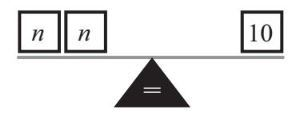
为了解题，我们需要把10匹配给两个n ，也就是说用10除以2，得到两个5，这两个5与两个n 对应：
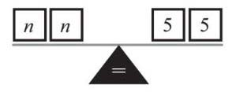
因此，n 等于5。
用跷跷板解题很有帮助，因为凭经验来说，为了让跷跷板平衡，必须使两边的重量均等。如果改变一边，必须以相同的方式改变另一边，才能保持平衡或平等。
我心里想着一个数，乘以3后再加上8等于20。这个数字是多少？
这次有点儿难。如果用n 表示未知数，方程可以写成3n +8=20。那么我们的跷跷板看起来像这样：
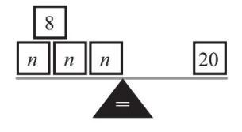
我能想到的是：12+8=20，于是就有，
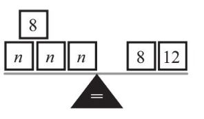
现在，式子两边同时减去8：
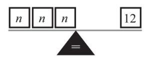
20减8后等于12，如果再把12分成3份，每份就是4：
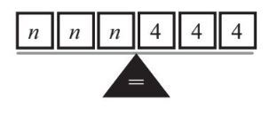
因此，n 等于4。如果我把每一步骤都写下来，而不是只体现在跷跷板上，我可以得到：
3n +8=20
（等式两边分别减去8）
3n =12
（等式两端分别除以3）
n =4
解方程的过程有点儿像在做游戏，等式两边同时去掉相同的项，直到方程一边只剩下未知数而另一边只剩下数字为止。我们可以使用逆运算来去除相同的项，下例就用到了除法和减法。
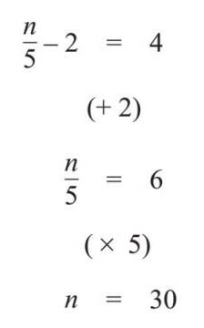
如果式子两边同时都有未知数，游戏就会变得略微困难。但难度也没有增加多少：
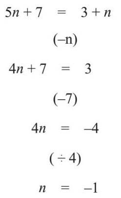
需要记住的是，我们可以把求出的答案代回原来的方程中，来检查方程的解。这叫作代入：
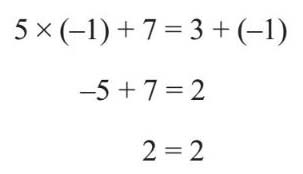
所有过程都检查过了，答案是正确的。
上面所有的方程都可以被称为线性方程，因为它们的未知数都不包含次方。未知数含有平方的方程称为二次方程，我们可以使用不同的方法来对其求解。
想象一下，有一个矩形的面积是15平方米，但不能确定长边和短边的确切长度，你能从这些信息中求出两个边长吗？
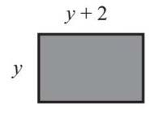
宽乘以长可以得到矩形的面积，所以我可以建立这样的方程，其中省略了乘号：
y(y+2)=15
由此，我们知道两个数字相乘等于15，其中一个数比另一个多2。
答案可能是3和5，这么容易就解出来了。但是不是每一次都可以通过心算求解？所以我们还是要看看如何用代数方法解这个二次方程。
这里再使用跷跷板方法就不太适合了，因为两边都有未知数，无法将它们组合在一起。我们可以把整个长方形分成一个正方形和一个较小的长方形来帮助我们解题。正方形的面积为y ×y =y 2 ，小长方形的面积是2×y =2y ，如下图所示：
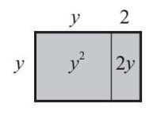
由图可知：y (y +2)=y 2 +2y ，并且因为正方形和小长方形的面积之和与大长方形的面积相同，所以也一定等于15：
y 2 +2y =15
我成功地将括号打开，得出了y 2 项，这也是这个方程被称为二次方程的原因。用代数求解二次方程有三种方法：完全平方法、因式分解法和公式法（使用二次方程的求解公式）。
要掌握这个方法，首先应知道将以下这个式子的括号展开，会得到什么：
(x +1)2
同样，我们可以借助几何学来解答，因为(x +1)2 表示(x +1)×(x +1)：一个数乘以这个数本身，这可以看成一个正方形的面积。如果我们把两条边分别表示为长度x 和长度1的相加，我们可以得到：
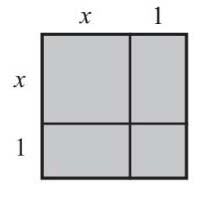
我们可以计算出每个部分的面积：
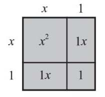
因此就有，(x +1)2 =x 2 +1x +1x +1。我们可以把1x 项合并，把式子化简为：
(x +1)2 =x 2 +2x +1
但即便化简之后，又能怎样？我们可以把这个等式的右边和我们要解的方程的左边比较一下，我们会发现：x 2 +2x +1和y 2 +2y 比较相似，只差了1。所以我们能推导出如下等式：
y2 +2y=(y+1)2 –1
为什么要这样大费周章呢？因为我们现在得到的二次方程式只有一边有y ，所以我们应该能够像解线性方程一样去求解。我们先写出整个方程式，并把它改写为：
y2 +2y=15
(y +1)2 –1=15
把等式两边都加1：
(y +1)2 =16
现在我们需要停下来，回忆一些解题步骤。我们从前文得知，需把两边都取平方根：
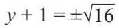
±这个符号提醒我们答案共有两个，16取平方根后，结果是4和–4：
y+1=±4
现在两边减去1：
y=±4–1
这意味着y 可以是–4+1=3或4+1=5。
这两个都是二次方程的有效解，但是只有y =3放在矩形面积的计算中才说得通。现在，我们知道y 是3，也就可以计算出y +2的值。因此，正如我们之前的猜想，可以看到，矩形的两边分别是3米和5米。
如果两个数相乘，结果为0，那么它们其中的一个必须为0。因式分解法的应用就是基于这个原理：
如果m ×n =0
则m =0或n =0，或者m 和n 都等于0
对于方程y 2 +2y =15，我需要做的第一件事就是在方程两边都减去15，等式的值保持不变。方程就变为：
y 2 +2y −15=0
接下来将二次方程分解为两个括号相乘，如（y +n ）（y +m ），其中n 和m 是数字。矩形再一次帮了大忙：
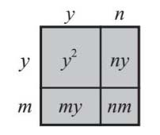
在这里，我们已知（y +n ）（y +m ）=y 2 +my +ny +nm 。如果我们把这个式子和等式进行比较，可知my +ny =2y ，nm =–15：
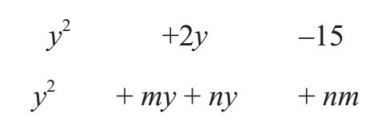
所以，我们需要找出的两个数字相加等于2，相乘等于–15。两个数相乘得负数、相加得正，只有一种可能，那就是两个数分别是一个较大的正数（使和为正）和一个较小的负数（使积为负）。在这个例子中，如果m =–3，n =5，是可行的。m +n =–3+5=2，mn =–3×5=15。我们现在知道：
y 2 +2y –15=(y –3)(y +5)=0
对于这种情况，要么y –3=0，要么y +5=0。这是两个非常简单的线性方程，我可以心算求解：y 等于3或–5，这与我们使用完全平方法时得到的结果一致。同样，这两个都是有效解，但是只有y =3时，矩形才有实际意义。通常，通过因式分解法来解二次方程，我们需要寻找两个数字，这两个数字的和等于y 项前面的数，而乘积等于常数项（即没有y 的项）。用括号围住它们，分别让每一个式子都等于0，就大功告成了。
有时，完全平方法和因式分解法无法求解。幸运的是，我们可以用公式法来完成二次方程的求解。婆罗门笈多是一位印度数学家，他是第一个用公式法来求解二次方程的人，他的公式是文字，而不是字母，距笛卡儿的标记法有1 000年之遥。但不管怎样，对于ay 2 +by +c =0这样的二次方程，它的解是：
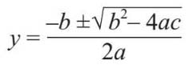
式子看起来很吓人，但实际上用起来并不难。我们要求解的方程是y 2 +2y –15=0，所以我们已知a =1，b =2，c =–15。将这些代入公式后，可以得出：
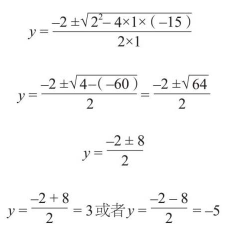
这里有两点要注意。第一，这个公式可以用来解二次方程，并且是一元二次方程。你也可以用完全平方法和因式分解法解题，但是可能有点儿复杂。第二，如果b2 –4ac的得数是负值，则无法求出结果，这意味着二次方程没有解，或者叫没有实数解。数学家把–1的平方根称作i ，但它是虚数。使用这种方法可以得到各种有趣的结果，在电子学和量子物理学等领域中具有意想不到的应用。
如果你想继续学习代数，下面这些关键词很有用。有一些前面已经出现，但在这里总结一下。
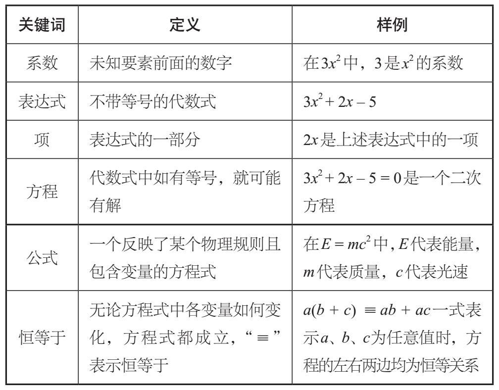
笛卡儿并不是第一个用字母表示未知数的人，但是在其著作《几何学》（1637）中，他第一次提出了现代代数方法。在研究中，笛卡儿第一次把数学的两个领域——几何和代数联系在一起。他用代数方程表示几何图形和线条。传说，笛卡儿躺在床上看苍蝇在天花板上飞来飞去时，想到了x –y 坐标系（被后人称为笛卡儿坐标系）。他希望能够准确地描述苍蝇的位置，所以选择天花板的一个角落作为起点（或0点），并使用两个数字作为坐标来定位，很像游戏《超级战舰》中的场景。